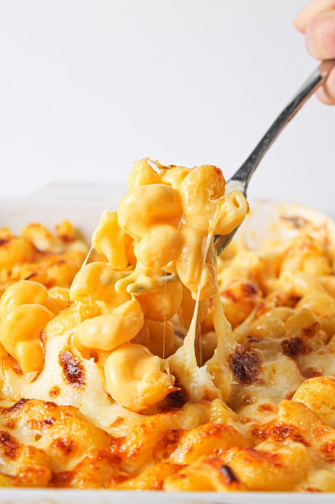

Ingredients
- 4 ounces elbow macaroni
- 4 ounces cubed processed cheese food (such as Velveeta)
- 2 fluid ounces milk
- ¼ teaspoon ground black pepper

Directions
- Bring a large pot of lightly salted water to a boil. Cook elbow macaroni in the boiling water, stirring occasionally, until tender yet firm to the bite, 8 to 10 minutes; drain.
- Place a saucepan over medium-low heat; add cheese , milk, and black pepper. Cook until cheese has melted, stirring frequently. Stir in drained macaroni until evenly coated.